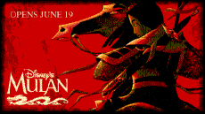
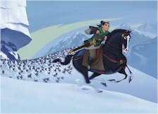
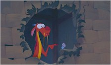

Contents | Features | Reviews | News | Archives | Store |
 |
|
| Movie Credits | Buy It! |
Mulan
Review by Elias Savada
Posted 19 June 1998
|  | Directed by Barry
Cook and Tony Bancroft Featuring the voices of
Ming-Na Wen, Lea Salonga, Written by Rita Hiss, Christopher Sanders, Philip LaZebnik, |
Mulan is the latest Disney goldmine to hit thousands of screens and millions of Happy Meals. I can’t vouch for the food (well, the fries are heavenly), but the film will quench your animated thirst for once upon a time during the hot summer days ahead. Nearly 700 artists, animators, and technicians have created one of the studio’s more memorable efforts and certainly the finest animated feature since The Lion King. Twentieth Century-Fox and Warner Bros., both rumored to be on the verge of shuttering their animation units, particularly the latter after the abysmal reception of its Quest for Camelot, may find Mulan to be the stake through their hearts. The conspicuous success of this cartoon masterpiece will assure the Mouse’s continued reign over Toon Town.
Stunningly photographed and epic in scope, this creative retelling of one of China’s most popular legends has been modernized with hip American slang and a wealth of visual and verbal humor, forged from the hands of six (credited) screenwriters and enhanced by an uplifting score by Jerry Goldsmith and a handful of immensely hummable songs by composer Matthew Wilder and lyricist David Zippel. It works amazingly well, quite beyond what I was expecting. This admirable chronicle of a young woman who masquerades as a man in the Imperial army brings both heroic and comic characterizations into play. Yes, a Disney formula, but the chemistry performs wonderfully. The brave free-spirit Mulan, voiced by Ming-Na Wen (The Joy Luck Club, E.R., and The Single Guy) and sung by Lea Salonga (who provided Princess Jasmine’s musical side in Aladdin), plays the straight man/woman to Eddie Murphy’s wise-cracking and pint-sized dragon Mushu, a runt of a beast ushered back into reluctant service by Mulan’s ghostly family ancestors. The voiceless cricket Cri-Kee inspires some of the many sight gags that populate the film (including the early incapacitation of a local Matchmaker), obviously enlivened by the little critter’s designer, Disney veteran Joe Grant, who created the Witch/Queen in Snow White and wrote Dumbo.
As the first feature primarily produced at Disney’s animation facility in Florida, the Southern production team is to be commended for a thoroughly enjoyable tale that might just make most of America’s young female audience forget their infatuation with Leonardo DiCaprio. While Mulan is indeed a family picture, there will be those late teens and twenty- and thirty-somethings who will pass it by in favor of Fox’s X-Files. Well, their loss. Those of you with kids – either they’ll beg you to take them, or you be sure to bring them along if you breach the subject of heading off to the movies this weekend. As a cautionary note, this is a tale of cross-dressing and, although told in a totally innocuous manner, the filmmakers go overboard with hilarious exuberance during a climactic battle scene that is remindful of Priscilla, Queen of the Desert and To Wong Foo, Thanks for Everything, Julie Newmar.
The cast of offbeat army recruits surrounding Mulan is an animated amalgam of Dirty Dozen misfits, the Seven Dwarfs, and the Three Stooges, including Chien-Po (Jerry S. Tondo), a gentle giant oriental version of Baby Huey; the temperamental and gruff Yao (Harvey Fierstein); and Ling (Gedde Watanabe), a gangly troublemaker. Their fearless leader is the handsome, brawny Captain Shang (B.D. Wong, sung by Donny Osmond), the quintessential Disney love interest of the secretive Mulan. Of course, every Uncle Walt film has to have its nasty and Shan-Yu (Miguel Ferrer) is one Hun-ey of a hunky bad guy. His menacing army is drawn in drab grays and browns, offsetting the colorful brights of the Imperial forces, often set against minimalist backgrounds.
Freshman co-director Barry Cook credits his inspiration to Charlie Chaplin and David Lean. The latter influence is particularly evident in the Hun mountainside advance of 2,000 soldiers on the Imperial troops and a later crowd sequence of 30,000 in the Imperial City. These sequences were made possible by advances in computer generated imagery overseen by co-director Tony Bancroft, also making his directing bow. And while Mulan uses more computer imagery than any previous Disney effort, its addition benefits the movie without detracting from the charm of the old fashion style of traditional hand-drawn character animation.
Mulan is imaginative beyond your wildest dreams. It’s stunning visuals – be it a watery reflection or a soft snowfall – and verbal barbs will have you watching in awe and rolling in laughter. You’ll root for the good guys and howl with delight when the gray meanies get their rightful comeuppance. Whoopee!
Contents | Features | Reviews | News | Archives | Store
Copyright © 1999 by Nitrate Productions, Inc. All Rights Reserved.